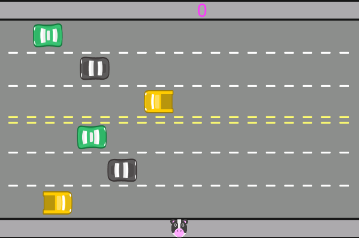

Projeto Remake FreeWay (1981)
Em Freeway , o jogador controlava uma galinha que deveria atravessar uma rodovia cheia de automóveis e de caminhões, com mais de seis pistas. Um jogo simples lançado para o Atari 2600 em 1981. Nesse projeto o objetivo era fazer um reamke do jogo utilizando o JavaScript.
O desenvolvimento desse projeto foi proposto em um dos cursos da Alura que tinha como objetivo o aprendizado da lógica de programação e o uso laços de repetição e listas. Esse foi o segundo projeto que eu fiz com JavaScript, foi uma experiência incrível.
Use as teclas ↑ e ↓, para mover a vaquinha respectivamente para CIMA e para BAIXO, o seu objetivo é atravessar a rua sem ser atropalado e assim ir conquistando pontos.
Minha Opinião
O jogo ficou bem legal, eu curti muito desenvolver ele, ainda quero aprimorar alguns detalhes estéticos, arrumar alguns bugs com a altura da colisão e também gerar a velocidade dos carros aleatóriamente. Mesmo assim eu achei que o jogo ficou sensacional. Espero que tenham gostado da experiência, muito obrigado!